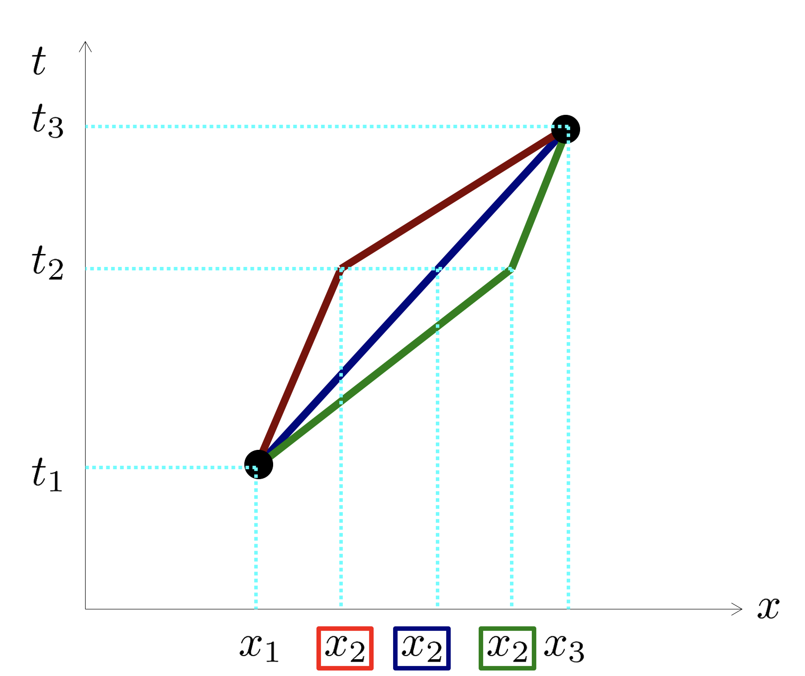
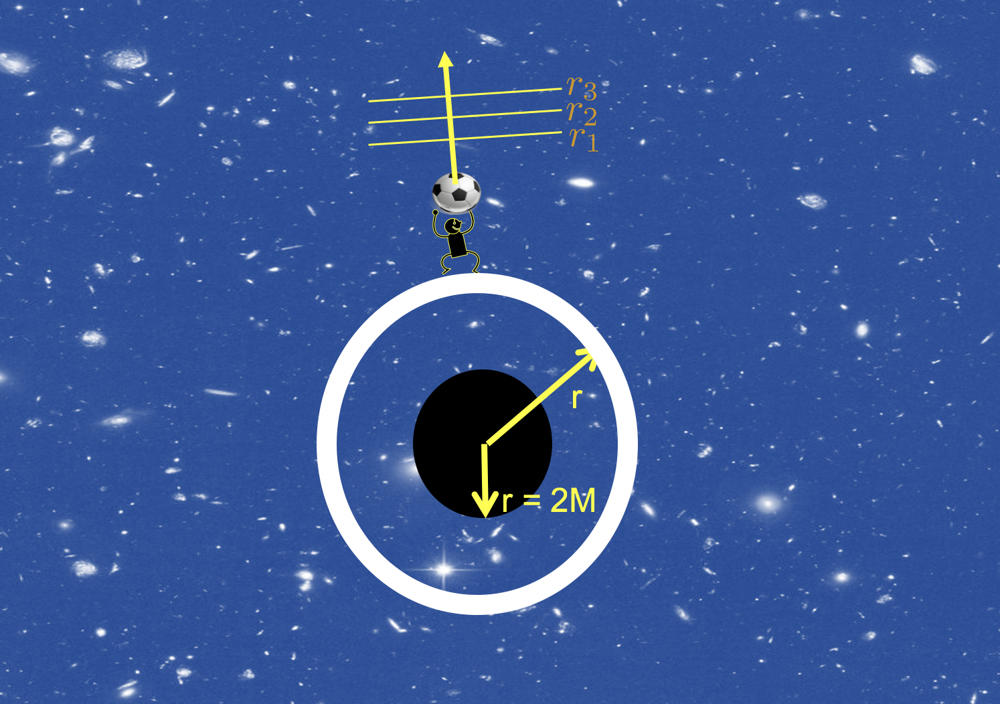
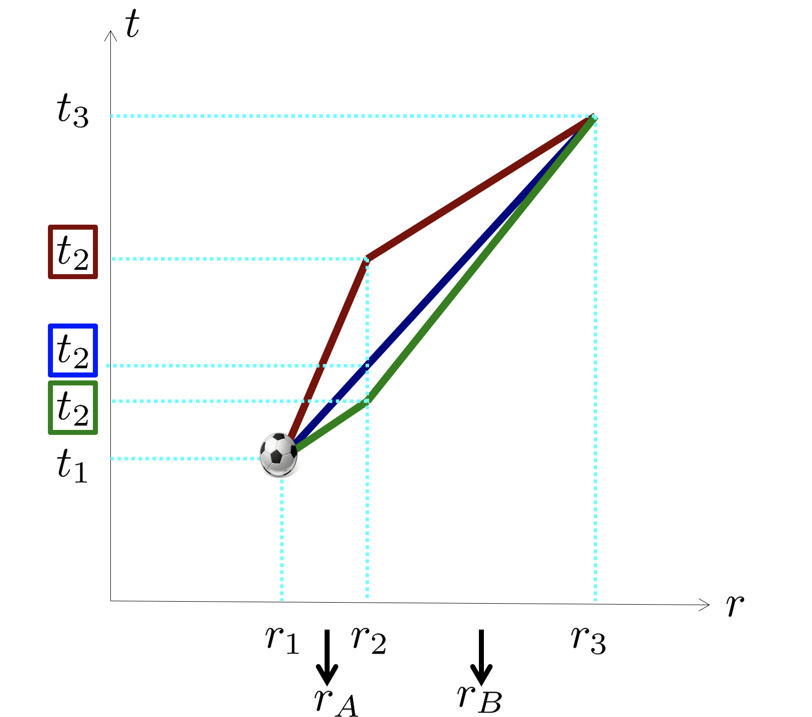
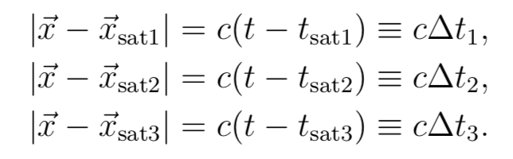

Du må bruke presentasjonsmodus/fullskjermsvisning for å lese denne, men du skal ikke bruke frem/tilbake-knappene, KUN knappene som dukker opp på sliden for å ta deg videre! Ofte må du laste filen ned til maskinen din og åpne den der for å få til dette. Merk at noen knapper vil åpne nettskjema, videoer eller andre ressurser i internettbrowseren din. Når du gjør det riktig, skal du kun se en side av gangen, og når du trykker på knappene som dukker opp på skjermen så skal disse ta deg frem/tilbake i dokumentet. Du vil miste mye læringsutbytte hvis du ser flere slides av gangen. Får du det ikke til, spør foreleser/gruppelærer!
Trykk denne knappen for å begynne
Dette er en erstatning for forelesningen i emnet. Har du gått skikkelig gjennom disse interaktive forelesningsnotatene så trenger du ikke å lese de fulle forelesningsnotatene (med unntak av oppgavene bak). All informasjonen du trenger, får du her. Du kommer til å få mange grublespørsmål og diskusjonsoppgaver, det er meningen at disse skal gjøres i grupper av minst 2, maks 4 studenter. Det er defor sterkt anbefalt at dere sitter sammen i grupper når dere går gjennom disse interaktive forelesningsnotatene, du vil få betydelig mer utbytte av dem på den måten. En god ide kan være å bli enige om å treffes til den faste forelesningstiden og bruke forelesningslokalet som kommer til å være resevert til dette. Hvis du har kommentarer ris/ros til disse forelesningsnotatene eller til emnet, trykk på 🙂 🙁 knappen som du finner på alle sider.
Trykk denne knappen for å begynne
HUSK at du får mer ut av de interaktive forelesningsnotatene når du gjør de sammen med noen. Diskusjonene med andre er svært viktige.
Det er mange spørsmål/grubliser underveis, sett dere selv en tidsgrense, 1-2 minutter på de korte, 4-5 minutter på de lenger. Ha en alarm ved siden av, ellers kommer dere til å bruke alt for langt tid. Har dere ikke fått det til etter 5 minutter, gå videre, se svaret og lær!
Er du i det minste tvil om noe, så finnes det nå en PADLETknapp, trykk det og still spørsmål med en gang mens du enda husker spørsmålet!
Trykk denne knappen for å begynne
Forrige side
Velkommen til forelesning 2 av 2 i del 2C! Vi skal nå regne med ß-geometri. Først skal vi tilbake til prinsippet for maksimal aldring og se hvilke store konsekvenser dette prinsippet har i et krumt tidrom. Så skal vi se på en stakkar som faller inn i et sort hull og så skal vi se på praktisk anvendelse av generell relativitetsteori: visst du at den er helt nødvendig for å få GPS til å funke?
Fremstillingen av generell relativitetsteori i AST2000 er basert på den fantastiske boken “Exploring black holes” av E. Taylor, J. Wheeler og E. Bertschinger, gratis tilgjengelig her. Anbefales på det sterkeste for den som er interessert. (Illustrasjon fra pngegg.com) Neste side
‘ Forrige side🙂 🙁IntroduksjonPADLET
Vi begynner som vanlig... ...med litt brainstorming. Som det er svært viktig at du gjør før du går videre.
Trykk her for å varme opp
Er du klar og har sendt inn skjemaet? Nei Ja
Nytt tema:
Maksimal aldring
Normalt kommer jeg bare frem til ca. side i den fysiske forelesningen og tar resten uka etter. Det anbefaler jeg at du også gjør! Vi skal nå snakke om maksimal aldring og ta en liten pause midtveis før neste tema. Maksimal aldring revisited...
Forrige side🙂 🙁Maksimal aldringPADLET
Vi begynner med den siste sida fra forrige forelesning: Hvis du ikke husker helt hva vi drev med anbefales det sterkt å ta en titt på oppsummeringen i denne videoen
slik at du er klar for det som nå kommer...
Forrige side🙂 🙁Maksimal aldringPADLET
Husker du prinsippet om maksimal aldring? I denne videoen
fra del 2B får du en oversikt over prinsippet og hvordan det kan brukes til å vise Newtons 1.lov i et inertialsystem med Lorentzgeometri. Hvis du ikke husker helt hvordan det var, kikk gjennom videoen nå før du går videre!
Forrige side🙂 🙁Maksimal aldringPADLET
Vi skal nå vise det som ble hoppet glatt over i videoen, nemlig hvorfor den rette linja er den lengste veien i tidrommet når vi har Lorentzgeometri. Vi tar derfor en kjapp tur tilbake til spesiell relativitetsteori siden vi etterpå skal bruke den samme metoden på generell relativitetsteori og ß-geometri.
Forrige side🙂 🙁Maksimal aldringPADLET
Her ser vi en person som kaster en ball rett bortover x-aksen. Personen befinner seg i et inertialsystem. Det virker altså ingen krefter eller gravitasjon i dette systemet. Vi har så tatt ut en infinitesimal liten del av veien som ballen følger. Vi gjør denne delen av veien er så liten at vi fra posisjon x1 til x2 kan anta at hastigheten er konstant lik vA. Og helt tilsvarende for avstanden fra x2 til x3 der hastigheten er konstant lik vB i hele intervallet. Merk at vA og vB ikke nødvendigvis er like, vi må være åpne for muligheten for at ballen kan akselerere underveis.
Forrige side🙂 🙁Maksimal aldringPADLET

Her ser vi tidromdiagram av situasjonen med tilhørende mulige verdenslinjer. Igjen så ser vi altså bare på en infinitesimal liten del av verdenslinja, to linjestykker som er infinitesimalt små der ballen har konstant hastighet (altså rett linje i tidrommet). Vi ser 3 mulige verdenslinjer integnet her av uendelig mange mulige verdenslinjer fra x1 til x3. Vi vet ikke hvilken av de uendelig mange verdenslinjene ballen faktisk tar, det er det vi nå skal bruke prinsippet om maksimal aldring til å finne ut.(Dvs. vi vet det jo egentlig, men vi later som om vi ikke vet det for å kunne utlede det!)
Forrige side🙂 🙁Maksimal aldringPADLET
Bare et av disse utsagnene er riktig, trykk på det riktige: rød sakker farten, grønn øker farten
grønn sakker farten, blå øker farten
grønn sakker farten, rød øker farten
blå sakker farten, rød øker farten
Forrige side🙂 🙁Maksimal aldringPADLET
Det ble vel ikke helt riktig? Husker du hvordan sammenhengen mellom fart og helning på linja er? Hvis ikke, ta en kikk nå på forelesningsnotatene for del 2B! Husk at fart er endring i posisjon Δx delt på tidsintervall Δt. Prøv igjen!
Forrige side🙂 🙁Maksimal aldringPADLET
Det er helt riktig. Du har kontroll på verdenslinjene og kan fortsette!
Forrige side🙂 🙁Maksimal aldringPADLET
Det vi ikke vet her er endringen i hastighet fra vA til vB. Vi antar nå at alle posisjonene x1, x2 og x3 er kjent. Vi antar også at tidspunktene t1 og t3 er kjent. Det som er ukjent er tidspunktet som ballen er i posisjon x2. Hvis vi kan bruke prinsippet om maksimal aldring til å fortelle oss tidspunktet t2, ja da vet vi hele verdenslinja fra x1 til x3. Det gjør at vi også vil vite om objektet tok en rett linje i tidrommet eller om det endret fart underveis. I figuren ser du de mulige tidspunktene t2 for de 3 linjene som er opptegnet. Vi ser at hvis prinsippet om maksimal aldring gir oss tidspunktet t2 som tilsvarer den blå linja, så har vi vist at ballen tar en rett linje med konstant fart i tidrommet.
Forrige side🙂 🙁Maksimal aldringPADLET
Vi kaller nå avstanden fra x1 til x2 for Δx12 og tidsintervallet mellom t1 og t2 for Δt12. Tidromsintervallet fra punkt 1 til punkt 2 kaller vi Δs12. Og helt tilsvarende for punkt 2 til 3 som vi kaller Δx23, Δt23 og Δs23. Sett opp et uttrykk for den totale egentiden Δτ13 som ballen bruker fra punkt 1 til punkt 3 uttrykt kun ved Δx12, Δt12, Δx23, Δt23!Ikke gå videre før du har skrevet ned et forslag!
Forrige side🙂 🙁Maksimal aldringPADLET
Fikk du... Ja, jeg fikk...
$$\Delta\tau_{13}=\sqrt{\Delta t_{12}^2-\Delta x_{12}^2}+\sqrt{\Delta t_{23}^2-\Delta x_{23}^2}$$ Hvis du ikke ser hvordan du kommer frem til dette, ta en kikk på denne videoen
.
Forrige side🙂 🙁Maksimal aldringPADLET
Prinsippet om maksimal aldring sier oss av vi skal maksimalisere, altså finne maksimalpunktet for den totale egentiden Δτ13: $$\Delta\tau_{13}=\sqrt{\Delta t_{12}^2-\Delta x_{12}^2}+\sqrt{\Delta t_{23}^2-\Delta x_{23}^2}$$ For å finne et ekstremalpunkt setter vi den deriverte lik null, men den deriverte med hensyn på hva? Jo det må vel være med hensyn på t2 som er vår ukjente. Vi skal altså finne den verdien for t2 som gjør Δτ13 maksimal! MEEEN.....
Forrige side🙂 🙁Maksimal aldringPADLET
$$\Delta\tau_{13}=\sqrt{\Delta t_{12}^2-\Delta x_{12}^2}+\sqrt{\Delta t_{23}^2-\Delta x_{23}^2}$$ ...det blir enklere å regne hvis vi isteden deriverer med hensyn på Δt12, altså at vi prøver å finne den verdien for Δt12 som maksimaliserer Δτ13. Δt12 er jo også en ukjent størrelse her siden t2 er ukjent, og det er det samme hvilken ukjent størrelse vi bruker. Men kan du se hvordan vi kan skrive Δt23 som jo inngår i uttrykket vår over uttrykt ved Δt12 og Δt13? (den siste er jo en kjent størrelse). Og hvis du gjør det, kan du nå derivere og sette lik 0? Prøv selv først før du går videre...
Forrige side🙂 🙁Maksimal aldringPADLET
Fikk du... Ja, jeg fikk...
$$\frac{\Delta t_{12}}{\sqrt{\Delta t_{12}^2-\Delta x_{12}^2}}+\frac{\Delta t_{23}}{\sqrt{\Delta t_{23}^2-\Delta x_{23}^2}}=0$$ ??? Hvis du ikke fikk det til skal du snart se hvordan, men først, kan du se hvorfor du kan skrive dette som: $$\frac{\Delta t_{12}}{\Delta\tau_{12}}=\frac{\Delta _{23}}{\Delta\tau_{23}}$$ (Hint: Hva er egentiden Δτ og hvordan kan du skrive den uttrykt med Δt og Δx?)
Forrige side🙂 🙁Maksimal aldringPADLET
Hvis du ikke klarte å komme frem selv, se på denne videoen
.
Forrige side🙂 🙁Maksimal aldringPADLET
Men hva står det egentlig her??? La oss ekstrapolere litt: Sett at du nå utvider verdenslinja med ett linjestykke til, et rett linje fra punkt 3 til punkt 4. Hvis vi nå gjentok denne utledningen fra punkt 2 til punkt 4 så vil vi jo nødvendigvis helt tilsvarende finne: $$\frac{\Delta t_{23}}{\Delta\tau_{23}}=\frac{\Delta t_{34}}{\Delta\tau_{34}}$$ Og slik fortsetter det utover verdenslinja. Det sier oss vel at vi har en bevart størrelse langs bevegelsen til ballen? Et uttrykk som generelt er bevart gjennom hele ballens bevegelse? Hvilket???
Forrige side🙂 🙁Maksimal aldringPADLET
Vi har jo funnet at $$\frac{\Delta t_{12}}{\Delta\tau_{12}}=\frac{\Delta t_{23}}{\Delta\tau t_{23}}=\frac{\Delta t_{34}}{\Delta\tau_{34}}$$ dermed ser vi at størrelsen Δt/Δτ er bevart, enig? Men tenk på spesiell relativitetsteori, hvordan kan vi skrive en slik størrelse uttrykt med ballens hastighet? Tenk f.eks. at ballen er et tog, at t er tiden målt fra bakken og τ jo er egentiden i toget...
Forrige side🙂 🙁Maksimal aldringPADLET
Er ikke Δt/Δτ bare forholdet mellom tiden i labsystemet og tiden i toget (ballen)??? Var ikke den $$\frac{\Delta t}{\Delta\tau}=\gamma$$ ??? Altså vi har utledet at γ er en bevart størrelse!!! Men hvis γ er bevart så betyr det at v er bevart siden $\gamma=1/\sqrt{1-v^2}$!! Er ikke dette det vi ventet? Altså at vi har utledet at v er den samme for alle linjestykker, altså konstant v gjennom hele verdenslinja, Newtons første lov! Men har vi utledet noe mer... hvilken annen størrelse avhenger av γ??
Forrige side🙂 🙁Maksimal aldringPADLET
Er ikke relativistisk energi gitt ved E = mγ ??? Har vi utledet at energi per masse er en bevart størrelse? Altså E/m er bevart? Kan se slik ut...
Kan altså være at prinsippet om maksimal aldring er det bakenforliggende prinsippet som sier oss hvorfor energi er en bevart størrelse? (Merk at det er et punkt vi har hoppet over: vi har funnet ekstremalpunktet til Δτ13 men vi har ikke vist at dette er et maksimalpunkt! Det kan du gjøre ved å dobbeltderivere. Den øvelsen kan du gjøre selv hvis du ønsker, men tro meg, det er et maksimalpunkt!)
Forrige side🙂 🙁Maksimal aldringPADLET
Du skal nå helt på egenhånd få gjøre denne utledningen en gang til! Men nå skal du anta at t2 er kjent men x2 er ukjent. Du skal altså maksimalisere egentiden Δτ13 en gang til men nå med hensyn på x2 eller da Δx12. Vi skal se at vi da får et noe annet men minst like interessant resultat!
Forrige side🙂 🙁Maksimal aldringPADLET

Du får litt hjelp med denne figuren her. Men nå står du på egne ben! Merk at dere på prosjekt skal gjøre en slik utledning for et nytt tilfelle, og dette kan komme på eksamen, så det er viktig å få prøvd seg alene en gang. Og det vil hjelp på forståelsen for det som kommer, så dette er et godt øyeblikk å gjøre det på. Når du har gjort hele utledningen og funnet et størrelse som er bevart på samme måte som vi fant at γ er bevart i forrige utledning, kan du bla om.
Forrige side🙂 🙁Maksimal aldringPADLET
Fikk du at vγ er en bevart størrelse? Hvis ikke, se gjennom utledningen i denne videoen
!. Men vi vet jo at relativistisk bevegelsesmengde er gitt ved p = mγv Har prinsippet om maksimal aldring her gitt oss bevaring av bevegelsesmengde? Eller det vil si, bevaring av bevegelsesmengde per masse p/m? Det er litt fristende å dra denne konklusjonen. Altså at prinsippet om maksimal aldring er et overliggende prinsipp som gir opphav til bevaring av energi og bevegelsesmengde. La oss se når vi setter på gravitasjon...
Kaffe!

MEN først litt kaffe. Og etter kaffen, en tur ut, ta med deg ball. Kast den bortover og oppover og lim gjerne fast en klokke for å måle hvor mye ballen eldes. Og for å forberede deg på det neste: kast ballen rett oppover og se om den fortsetter med konstant hastighet eller om den akselereres på noen måte. Og hvis det siste skjer kan du jo filosofere litt rundt hvorfor den akselereres? Ikke gå videre før du er helt klar i hodet igjen!
Jeg er klar til å fortsette...
Forrige side🙂 🙁Maksimal aldringPADLET

Her ser vi situasjonen med gravitasjon. Skallobservatøren kaster en ball rett oppover i tyngdefeltet. Ballen går altså oppover i r-retning og passerer punktene r1, r2 og r3 på sin vei. Akkurat som for tilfellet med spesiell relativitetsteori så legger vi r1 og r2 så nær hverandre at ballen har konstant hastighet mellom disse to punktene. Helt tilsvarende mellom r2 og r3. Men farta vA mellom r1 og r2 trenger ikke å være den samme som farta vB mellom r2 og r3. Vi skal også se at vi trenger å definere avstanden rA som er midlet av avstanden mellom r1 og r2, altså i praksis midtpunktet mellom de to. Helt tilsvarende er rB midtpunktet mellom r2 og r3. Vi skal nå bruke prinsippet om maksimal aldring til å finne ballens rette verdenslinje...
Forrige side🙂 🙁Maksimal aldringPADLET
Men stopp en hal! Husker du at prinsippet om maksimal aldring kun gjelder legemer som er i fri flyt? Altså legemer som det ikke virker noen krefter på!!! VEL, i generell relativitetsteori er ikke gravitasjonen regnet som en kraft! Som vi skal se så er det krumningen av tidrommet som gir seg utslag i noe som ser ut som en kraft. Men ifølge relativitetsteorien så er det ingen kraft. Dermed er et legeme under gravitasjonspåvirkning enda i fri flyt. Og det er geometrien til tidrommet kombinert med prinsippet om maksimal aldring som gir opphav til akselrasjon, ikke noen kraft!
Forrige side🙂 🙁Maksimal aldringPADLET

Her ser vi igjen 3 mulige verdenslinjer, eller retter sagt det bittelille utsnittet av mulige verdenslinjer til ballen mellom høyde r1 til r3 fra tidspunkt t1 til t3 der det har konstant hastighet (rett linje) fra r1 til r2 og en (mulig) annen konstant hastighet fra r2 til r3. Her beveger ballen seg over flere skall så vi kan ikke anta lokalt inertialsystem for hele reisen. Dermed må vi bruke ß-geometri. Kan du sette opp et uttrykk for den totale egentida slik som du gjorde tidligere? Ikke bla om før du har et forslag.
Forrige side🙂 🙁Maksimal aldringPADLET
Fikk du: $$\begin{aligned}
\Delta\tau_{13}&=\Delta\tau_{12}+\Delta\tau_{23} \\
&=\sqrt{\left(1-\frac{2M}{r_A}\right)\Delta t_{12}^2-\frac{\Delta r_{12}^2}{\left(1-\frac{2M}{r_A}\right)}} \\
& \qquad +\sqrt{\left(1-\frac{2M}{r_B}\right)\Delta t_{23}^2-\frac{\Delta r_{23}^2}{\left(1-\frac{2M}{r_B}\right)}},\end{aligned}$$ Ser du nå hvorfor vi trenger rA og rB? Hvis ikke se se denne videoen
for utledning og forklaringer. Vi skal nå bruke prinsippet om maksimal aldring på denne egentiden Δτ13 og finne hvilket tidspunkt t2, og dermed hvilken verdenslinje, som maksimaliserer egentida.
Forrige side🙂 🙁Maksimal aldringPADLET
Hvis du som før deriverer dette med hensyn på Δt12, setter dette lik 0 og setter inn for egentidene Δτ12 og Δτ23 akkurat som før får du da: $$\frac{\left(1-\frac{2M}{r_A}\right)\Delta t_{12}}{\Delta\tau_{12}}=\frac{\left(1-\frac{2M}{r_B}\right)\Delta t_{23}}{\Delta\tau_{23}}.$$ Hvis ikke, se denne videoen for detaljer
. Ser du også her, på samme måte som for eksemplene med Lorentzgeometri, at vi har funnet en størrelse som er bevart langs verdenslina? Hva er denne størrelsen?
Forrige side🙂 🙁Maksimal aldringPADLET
Fikk du at størrelsen $$\left(1-\frac{2M}{r}\right)\frac{\Delta t}{\Delta\tau}$$ er en størrelse som er bevart langs (ved ekstrapolasjon) hele bevegelsen til ballen? Men hva i allverden sier dette oss for noe? I denne videoen
skriver vi om og tolker uttrykket.
Forrige side🙂 🙁Maksimal aldringPADLET
I videoen ser vi at uttrykket som er bevart $$\left(1-\frac{2M}{r}\right)\frac{\Delta t}{\Delta\tau}$$ kan skrives som $$\sqrt{1-\frac{2M}{r}}\frac{1}{\sqrt{1-v_\mathrm{sh}^2}}$$
der vsh er farta målt av en skallobservatør som er på akkurat det skallet som ballen er i et gitt øyeblikk. Vi ser at denne størrelsen forteller oss at ballen sakker farten sin når den er på vei oppover i tyngdefeltet: Hvis dette skal være en bevart størrelse, og hvis r øker (ballen beveger seg oppover), ja da må vsh minke for å bevare denne størrelsen! Ser du det?
Men hva i allverden er dette for en størrelse? Som vi så i del 2B så er et typisk triks for å tolke relativistiske størrelser å gå til grensen med lave hastigheter og i dette tilfellet også svake gravitasjonsfelt. Ved svake gravitasjonsfelt, altså langt fra sorte hull bør vi få tilbake noe Newtonsk. I denne videoen
rekkeutvikler vi og tolker uttrykket.
Forrige side🙂 🙁Maksimal aldringPADLET
I videoen så vi at den bevarte størrelsen vår tilsvarer total energi per masse til ballen, hvileenergi, kinetisk energi og potensiell gravitasjonsenergi i et og samme uttrykk: $$\frac{E}{m}=\sqrt{1-\frac{2M}{r}}\frac{1}{\sqrt{1-v_\mathrm{sh}^2}}\approx 1+\frac{1}{2}v^2-\frac{M}{r}$$ der tilnærmelsen gjelder for lave hastigheter v < < 1 og svake gravitasjonsfelt r > > M, det vi kaller for den klassiske grensen. Ganger vi opp med m og bruker SI-enheter ser vi at vi får $$E\approx mc^2+\frac{1}{2}mv^2-G\frac{Mm}{r}$$ i den klassiske grensen.
Forrige side🙂 🙁Maksimal aldringPADLET
Vi har altså
det generelle uttrykket for energi per masse til et legeme... ...med masse m i tyngdefeltet til en kulesymmetrisk massefordeling med masse M i en koordinatavstand r (husk hvordan dette måles) fra sentrum $$\frac{E}{m}=\left(1-\frac{2M}{r}\right)\frac{\Delta t}{\Delta\tau}$$ der Δt/Δτ er forholdet mellom et egentidsintervall Δτ målt på klokka som står fast på objektet og Δt som er det tilsvarende tidsintervallet for langt-vekkobservatøren. Dette kan skrives ut ved hjelp av lokal skallhastighet vsh for legemet som $$\frac{E}{m}=\sqrt{1-\frac{2M}{r}}\frac{1}{\sqrt{1-v_\mathrm{sh}^2}}$$
Nytt tema:
Falling, falling...
En god strekk på beina nå så du ikke faller i søvn! Ti spensthopp samt stupe kråke 10 ganger på gulvet (begynner å bli litt vått ute). Er tankene klare? La oss kaste oss ut mot det sorte hullet!
Forrige side🙂 🙁Falling, falling...PADLET

Vi er tilbake til den fritt fallende observatøren. Hun begynner å falle radialt innover mot det sorte hullet fra en veldig stor avstand r → ∞ og med null hastighet v = 0. Etterhvert vil gravitasjonen fra det sorte hullet akselerere henne innover mot hullet. La oss prøve å finne et uttrykk for hastigheten hennes som funksjon av tida. Aller først: Hva er totalenergien E som hun starter med?
E = 0E = 1E = mE = mγE = mM
Forrige side🙂 🙁Falling, falling...PADLET
Det ble galt. Gå et par sider tilbake og se på uttrykket for energi i tyngdefeltet. Hva blir dette når r er veldig stor og hastigheten er 0?
Forrige side🙂 🙁Falling, falling...PADLET
Det ble riktig. Vi begynner med energi E = m i grensen r → ∞ og v = 0.
Forrige side🙂 🙁Falling, falling...PADLET
For å komme frem til en hastighet v for det fallende legemet/osbervatøren skal vi følge oppgave 2C.4. Merk at vi først prøver å finne hastigheten v = dr/dt til det fallende legemet målt av langt-vekkobservatøren. Deretter konverterer vi dette uttrykket til hastighet vsh målt av en lokal skallobservatør. På den måten kan vi sammenlikne den hastigheten til legemet som funksjon av tiden sett av de to forskjellige observatørene. Det er sterkt anbefalt at du prøver deg på denne oppgaven. Sett deg en kort tidsgrense i tilfelle du blir stående fast og bruk videoen på neste side til å hjelpe deg kun til de delene der du sitter fast. Dette er en meget god eksempeloppgave for å lære å regne med uttrykket for energi. (MERK at det i den første oppgaven står “information above”, det er det samme som står på de 3 foregående sidene!)

Forrige side🙂 🙁Falling, falling...PADLET
Fikk du det til? I denne videoen
får du hjelp til utledningene. Når du har forstått hvordan vi kommer frem til uttrykkene skal vi begynne å tolke dem. La oss begynne med hastigheten v målt av langt-vekkobservatøren. Kan du forenkle dette uttrykket for store avstander r? Kan du finne et annet forenklet uttrykk for disse uttrykkene når r → 2M?
Forrige side🙂 🙁Falling, falling...PADLET
Kan du forklare hvorfor $$v\approx-\sqrt{\frac{2M}{r}}$$ når avstanden r er veldig stor, dvs. vi er langt vekk fra tyngdefeltet? Ser du at dette er likt uttrykket som skallobservatøren måler, hvorfor må det være slik? Og kan du forklare hvorfor $$v\approx-\left(1-\frac{2M}{r}\right)$$ når r er nær (men utenfor) 2M?
Forrige side🙂 🙁Falling, falling...PADLET
Du kan få bruk for formlene til høyre for å svare på disse spørsmålene:
Hva skjer med hastigheten når legemet enda er langt ute men faller innover? Øker eller minker hastigheten?
Og hva skjer når legemet nærmer seg hendelsehorisonten, øker eller minker hastigheten ettersom det faller innover?
Hvilken hastighet får det rett på hendelsehorisonten?
Minner igjen om at dette er hastighet v = dt/dt målt av langt-vekkobservatøren!
Formler du trenger:
$$v\approx-\sqrt{\frac{2M}{r}}$$ når avstanden r er veldig stor og
$$v\approx-\left(1-\frac{2M}{r}\right)$$ når r er nær (men utenfor) 2M.
Forrige side🙂 🙁Falling, falling...PADLET
La oss nå se på hastigheten vsh målt av skallobservatøren på det skallet r der ballen passerer på et gitt øyeblikk.: $$v_\mathrm{sh}=-\sqrt{\frac{2M}{r}}$$ Dette uttrykket gjelder for hele fallet fra start til slutt. Hvilken hastighet vil skallobservatører på skall veldig nær hendelsehorisonten måle at legemet har i det det farer forbi?
I denne videoen
får du svar på spørsmålene fra de foregående sidene...
Forrige side🙂 🙁Falling, falling...PADLET
Vi avslutter vår studie av det fritt fallende legemet for denne gang ved å se på hva som skjer på innsiden av hendelsehorisonten. Denne videoen
tar for seg litt av hva som skjer der.
Forrige side🙂 🙁Falling, falling...PADLET
Oppsummert har vi at:
Langt-vekkobservatøren vill aldri se at legemet faller innenfor eventhorisonten. Han vil se at det sakte min sikkert stopper opp på eventhorisonten (vi skal se senere at lyset også blir kraftig rødforskøvet, så han vil til slutt ikke lenger se legemet).
Skallobservatører nærmere og nærmere eventhorisonten vil se stadig økende fart på legemet og den vil for skallobservatørene nærmest eventhorisonten nærme seg lysfarta.
Den fritt fallende observatøren selv merker ingenting når hun nå går gjennom eventhorisonten, det skjer ikke noe spesielt der for den som faller inn (bortsett fra at gravitasjon etterhvert blir veldig sterkt men det har ikke noe å gjøre med selve hendelsehorisonten, denne effekten kan begynne lenge før r = 2M). Og i forhold til seg selv har hun alltid hastighet 0.
Som vi ser, tre helt forskjellige hendelseforløp for 3 forskjellige observatører!
Nytt tema:
GPS
I den fysiske forelesningen rekker jeg normalt såvidt å begynne på dette temaet, kanskje 5-6 sider til. Hvis du er litt sliten nå, bør du også vente med resten til neste uke. Er du derimot frisk og opplagt er det ingenting i veien for å fortsette etter en skikkelig pause. Hva har relativitetsteorien å gjøre med posisjonsmålinger?

GPS-systemet består av 24 satelitter som går i bane rundt jorden i en høyde av omkring 20 000km og med omløpstid på 12 timer. Satelittenes posisjon er beregnet veldig nøyaktig til ethvert tidspunkt. Satelittene har klokke ombord og sender kontinuerlig ut signaler med beskjed om nøyaktig fra hvilken posisjon x⃗sat, i og i hvilket tidspunkt tsat, i dette signalet ble sendt ut fra satelitt i. Mobilen eller GPS-mottageren din tar imot disse signalene fra 3 (egentlig 4 men det er en annen historie) av disse satelittene. GPS-mottakeren din har også en klokke. Tiden t på mobilen kombinert med posisjonene x⃗sat, 1, x⃗sat, 2, x⃗sat, 3, og tidene tsat, 1, tsat, 2 tsat, 3 som den mottar fra 3 satelitter er nok til å beregne din posisjon x⃗.
Her har du 3 ukjente som er de 3 komponentene av posisjonsvektoren din x⃗. Kan du skrive opp 3 likninger for å løse disse? Dvs. de 3 likningene som GPS-mottakeren løser for å finne din posisjon? Merk at du ikke skal løse likningene, kun skrive de opp!. Bruk gjerne SI-enheter nå isteden for relativistiske enheter.
Fikk du det til??? Trenger du et hint? Neida, fikk det til jeg! Gjerne et hint ja!
Strekning er lik fart ganger tid. Hvor lang tid bruker hver av signalene fra satelitten frem til GPS-mottakeren? Det er 3 slike signaler!

Fikk du disse likningene? Her er Δti tiden det tar for hver av de 3 signalene å gå fra satelitt og frem til mottaker. Vi skal ikke løse disse likningene i sin helhet her, men jeg vi prøve å overbevise deg om at svaret, f.eks. for x-komponenten kommer til å inneholde flere ledd av typen x = et eller annet ganger cΔt1 + ... høres det sannsynlig ut?
Forrige side🙂 🙁GPSPADLET
Hvis du er enig i det, så la oss som eksempel bare anta for enkelhetsskyld til første orden at x ≈ cΔt1 (løsningen kommer til å ha mange ledd av denne typen til første orden) Her er jo Δt1 tiden det tar fra signalet ble sendt ut fra satelitt 1 til det blir mottatt på GPS-mottakeren, altså Δt1 = t − tsat, 1 Hvis tidsintervallet Δt1 blir målt feil med kun 1 mikrosekund (10−6 sekunder, hvor stor blir feilen i posisjon?? Δx ≈ 3 meterΔx ≈ 30 meter
Δx ≈ 300 meterΔx ≈ 3 kilometer
Forrige side🙂 🙁GPSPADLET
Her var du litt rask, prøv igjen, dette får du til!
Forrige side🙂 🙁GPSPADLET
Nettopp! Hele 300 meter feil med bare et mikrosekund bom på tiden. Da må tidsmålingen være veldig nøyaktig for at du skal få meningsfull posisjon med GPS. Men ser du et problem her???
mener du et relativistisk problem? Ja, saktens...
Forrige side🙂 🙁GPSPADLET
Vi jordboere og satelittene er vel begge skallobservatører i hvert sitt skall? Vi går rundt med omkring fast avstand r til jordas sentrum, samme gjør satelittene men med en annen r. Dermed går satelittklokkene med en annen hastighet enn våre klokker!. Hvordan var nå dette igjen, går satelittklokkene fortere eller saktere enn våre klokker?
Forrige side🙂 🙁GPSPADLET
Var det ikke slik at tiden går saktere nede i et tyngdefelt? Altså at tiden vår går saktere enn klokkene i satelitten? Vi hadde: $$\Delta t_\mathrm{sh}=\sqrt{\sst}\Delta t$$ Men hvor mye saktere går klokkene våre? Blir det størrelseorden mikrosekund? Isåfall kan det ha stor effekt på posisjonsmålinger med GPS. Men det er en ting til: Satelittene har en ganske høy hastighet i forhold til oss, da kommer også spesiell relativitetsteori inn! Men hvilken vei virker den? Går klokkene våre fortere eller saktere enn satelittens klokker på grunn av spesiell relativitet? Jeg har tenkt og vet svaret!
Var det ikke slik at Δt = γΔτ? Der t er lab-tida, altså tida vår mens τ er egentida til satelitten (toget)? Husk at γ er en forstørrelsefaktor. Vi husker at vi ser alt i saktefilm i toget slik at tiden mellom to tikk på klokka i toget tok lenger tid på våre klokker, Δt > Δτ. Altså at våre klokker går raskere enn satelittklokkene!. Denne er nøyaktig motsatt av den generell-relativistiske effekten der våre klokker går fortere enn satelittklokkene på grunn av tyngdefeltet. De to effektene motvirker altså hverandre, men nuller de hverandre ut?? Det må vi sjekke nå!
Forrige side🙂 🙁GPSPADLET
Vi skal se at ß-geometrien inneholder både generell og spesiell relativitetsteori sammen slik at også effektene av hastighet er med. For å finne hvor mye fortere eller saktere våre klokker går i forhold til satelittklokkene, trenger vi å finne forskjellen mellom et tidsintervall Δτsat på en satelittklokke, f.eks. to tikk på satelittklokken, og hvor lang tid Δτjord det går på våre klokker mellom disse to tikkene. Er denne forskjellen så stor at den kan medføre at vi beregner gale reisetider til signalene og dermed gale posisjoner med GPS? Merk at vi her skal bruke egentid Δτ for både satelittene og oss selv. Altså tid målt på klokker som står fast på satelittene og andre som står fast på oss. Men begge disse egentidene tikker med forskjellig hastighet.
Forrige side🙂 🙁GPSPADLET
Har du lagt merke til at vi egentlig skal transformere tidsintervall mellom to skallobservatører? Gitt at det tar et tidsintervall Δτsat mellom to tikk på klokka til satelitten, så vil vi finne hvor lang tid Δτjord det tar på vår klokke mellom de to tikkene. Vi har oss selv som er skallobservatørene på jorda med fast avstands-koordinat rjord og med en tangensialhastighet (på grunn av jordas rotasjon) på vϕ, jord langs skallet vårt. Satelittene er også skallobservatører som er fast på skallet i avstand rsat og med en tangensialhastighet langs skallet sitt som er vϕ, sat gitt av banehastigheten.Men vi har så langt bare utledet transformasjonen av et tidsintervall Δt for langt-vekkobservatøren til et skalltidsintervall Δtsh for et gitt skall! Vi har ikke utledet denne transformasjonen mellom to skall som er det vi trenger her!. Men vi har egentlig det vi trenger for å gjøre denne transformasjonen, ser du det??
Her bør du prøve å se om du finner en løsning. Dette kan være en typisk oppgave... Hint? Please?
Det fikk du på forrige side, selv om det ikke står eksplisitt at det er et hint...
Forrige side🙂 🙁GPSPADLET
Prinsippet er som følger:
La oss ta f.eks. to tikk på (egentids-)klokka til satelitten. Vi kaller tidsintervallet mellom disse for Δτsat.
Vi vet dermed at vi kan regne dette om til et tidsintervall Δt for langt-vekkobservatøren. For langt-vekkobservatøren tar det altså et tidsintervall Δt mellom de to tikkene på satelittklokka.
Men vi kan igjen regne om et tidsintervall for langt-vekkobservatøren til et tidsintervall på vårt skall. Altså vi kan finne ut hvor lang tid det tar på våre (egentids-)klokker Δτjord for et tidsintervall Δt på langt-vekk-klokka.
Men siden tidsintervallet Δt på langt-vekk-klokka tilsvarer tidsintervallet Δτsat mellom to tikk på satelittklokka, så har vi altså funnet tidsintervallet Δτjord målt av oss mellom de to tikkene på satelittklokka
Vi trenger altså å finne noen uttrykk for Δτsat og Δτjord, begge uttrykt ved det felles langt-vekk-tidsintervallet Δt. Kan du se hvordan vi kan finne et slikt uttrykk?
Forrige side🙂 🙁GPSPADLET
La oss begynne med Δτsat, kan du finne et uttrykk for denne som også inneholder Δt? Hint?
Et egettidsintervall mellom to eventer er vel lik tidromsintervallet mellom disse eventene? Og hvordan ser tidromsintervallet ut? Ahaa.....
Siden vi nå skal gå fra et skall til et annet så kan vi ikke anta lokalt inertialsystem, da må vi bruke full ß-geometri: $$\Delta\tau_\mathrm{sat}^2=\Delta s^2=\sst\Delta t^2-\frac{\Delta r_\mathrm{sat}^2}{\sst}-r_\mathrm{sat}^2\Delta\phi_\mathrm{sat}^2$$ der Δs og Δt altså er tidroms- og langt-vekktidsintervall mellom de to tikkene på satelittklokka. OK!
Men satelitten endrer vel ikke r-poisjon? Den er jo fast på et skall, så vi får vel Δrsat = 0 som gir $$\Delta\tau_\mathrm{sat}^2=\sst\Delta t^2-r_\mathrm{sat}^2\Delta\phi_\mathrm{sat}^2$$
Forrige side🙂 🙁GPSPADLET
Vi hadde altså $$\Delta\tau_\mathrm{sat}^2=\left(1-\frac{2M}{r_\mathrm{sat}}\right)\Delta t^2-r_\mathrm{sat}^2\Delta\phi_\mathrm{sat}^2$$ Men vi har en Δϕsat her! Hadde det ikke vært bedre å få inn satelitthastigheten vϕ, sat? Hvordan kan du gjøre det? Jeg har tenkt og har et forslag...
Vi vet jo fra celestmekanikk at tangensialhastighet er gitt ved vϕ = rϕ̇ = rΔϕ/Δt, ikke sant? Omskrevet har vi da rΔϕ = vϕΔt. Insatt gir det oss $$\Delta\tau_\mathrm{sat}^2=\Delta t^2\left(1-\frac{2M}{r_\mathrm{sat}}-v_{\phi,\mathrm{sat}}^2\right)$$
Forrige side🙂 🙁GPSPADLET
Vi kan bruke nøyaktig samme tankegang for oss selv som skallobservatører og komme frem til nøyakti samme uttrykk: $$\Delta\tau_\mathrm{jord}^2=\Delta t^2\left(1-\frac{2M}{r_\mathrm{jord}}-v_{\phi,\mathrm{jord}}^2\right)$$ Sammen med uttrykket for satelitten fra forrige side $$\Delta\tau_\mathrm{sat}^2=\Delta t^2\left(1-\frac{2M}{r_\mathrm{sat}}-v_{\phi,\mathrm{sat}}^2\right)$$ kan vi nå finne forholdet Δτjord/Δτsat som sier oss forholdet mellom et tidsintervall på satelittklokke og vår egen klokke. Vi deler rett og slett de to likningen på hverandre og tar kvadratroten: $$\frac{\Delta\tau_\mathrm{jord}}{\Delta\tau_\mathrm{sat}}=\sqrt{\frac{1-\frac{2M}{r_\mathrm{jord}}-v_{\phi,\mathrm{jord}}^2}{1-\frac{2M}{r_\mathrm{sat}}-v_{\phi,\mathrm{sat}}^2}}$$ Legg merke til at tidsintervallet Δt blir forkortet vekk siden vi ser på det samme tidsintervallet (for langt-vekkobservatøren) i begge tilfeller.
Forrige side🙂 🙁GPSPADLET
Pent lite uttrykk, hva? $$\frac{\Delta\tau_\mathrm{jord}}{\Delta\tau_\mathrm{sat}}=\sqrt{\frac{1-\frac{2M}{r_\mathrm{jord}}-v_{\phi,\mathrm{jord}}^2}{1-\frac{2M}{r_\mathrm{sat}}-v_{\phi,\mathrm{sat}}^2}}$$ Hvis vi lar tyngdefeltet her bli veldig svakt, si M → 0 og vi lar oss selv stå i ro vϕ, jord = 0, ser du hva vi får da? Står det ikke da egentlig her at Δt = γΔτ? Slik ser vi at den spesielle relativitetsteorien er innebakt i ß-geometrien, når tyngdefeltet er lite får vi tilbake Lorentz.
Forrige side🙂 🙁GPSPADLET
$$\frac{\Delta\tau_\mathrm{jord}}{\Delta\tau_\mathrm{sat}}=\sqrt{\frac{1-\frac{2M}{r_\mathrm{jord}}-v_{\phi,\mathrm{jord}}^2}{1-\frac{2M}{r_\mathrm{sat}}-v_{\phi,\mathrm{sat}}^2}}$$ La oss prøve å sette inn tall: Vi kjenner avstanden til jordas overflate rjord ≈ 6000km og satelittene går i en høyde av 20 000 km som betyr rsat ≈ 26000 km. Det holder med omtrentlige tall her, vi skal jo kun gjøre et overslag for å finne størrelseorden. Et punkt på jordoverflaten snurrer en gang rundt i løpet av omkring 24 timer, altså er vϕ, jord = 2π × 6000/(24×3600) km/s og satelittene bruker 12 timer på en runde, altså vϕ, sat = 2π × 26000/(12×3600) km/s. Vi fant på forrige forelesning at jordas masse i meter er M = 4.45 mm. Husk at hastighetene må deles på lyshastigheten for å få relativistiske enheter!. Sett inn disse tallene i telleren og nevneren av brøken hver for seg! Hvilke tall fikk du?Det er svært viktig at du faktisk gjør dette, du kommer til å oppdage noe!
Forrige side🙂 🙁GPSPADLET
Fikk du noe alla 0.99999999 og kanskje til slutt noen andre siffer? For både telleren og nevneren? Fikk du ikke det, har du gjort noe galt, du skal få det!.Men dele to slike tall på hverandre? Og deretter ta kvadratroten??? Her er det duket for store numeriske feil!!!
Forrige side🙂 🙁GPSPADLET
$$\frac{\Delta\tau_\mathrm{jord}}{\Delta\tau_\mathrm{sat}}=\sqrt{\frac{1-\frac{2M}{r_\mathrm{jord}}-v_{\phi,\mathrm{jord}}^2}{1-\frac{2M}{r_\mathrm{sat}}-v_{\phi,\mathrm{sat}}^2}}$$ Dette skjer selvfølgelig fordi både 2M/r og v2 er mye mindre enn 1 både i teller og nevner. Vi har altså 1 og trekker fra noen bittesmå tall. Dette vil alltid skje når du bruker relativitetsteori på “hverdagen”, altså lave hastigheter og svake gravitasjonsfelt.Hva gjør vi da??? Forslag til løsning?
Forrige side🙂 🙁GPSPADLET
$$\frac{\Delta\tau_\mathrm{jord}}{\Delta\tau_\mathrm{sat}}=\sqrt{\frac{1-\frac{2M}{r_\mathrm{jord}}-v_{\phi,\mathrm{jord}}^2}{1-\frac{2M}{r_\mathrm{sat}}-v_{\phi,\mathrm{sat}}^2}}$$ Jaaaa, altså hvis 2M/r og v2 er små størrelser, hvorfor ikke rekkeutvikle i disse? Da skulle vi ende opp med polynomer som vi fint kan regne uten numeriske problemer. Dette pleier å være løsningen!. Men hvordan vil du gå frem for å rekkeutvikle her? Tjaaaaaa...
I denne videoen får du hjelp...
Forrige side🙂 🙁GPSPADLET
Vi får altså: $$\frac{\Delta\tau_\mathrm{jord}}{\Delta\tau_\mathrm{sat}}\approx 1+\left(\frac{M}{r_\mathrm{sat}}-\frac{M}{r_\mathrm{jord}}\right)+\frac{1}{2}(v_{\phi,\mathrm{sat}}^2-v_{\phi,\mathrm{jord}}^2)$$ Her har vi altså et uttrykk for hvor mye fortere en klokke går enn den andre. Anta at klokka i GPS-satelittene ble synkronisert med jord-klokker i det øyeblikk satelittene begynte å bli operasjonelle. Et døgn, nøyaktig 24 timer senere, målt på satelittklokkene, hvor mye har klokkene på jorda gått? Hvis vi setter Δτsat = 24 timer så ser vi at det første leddet etter 1-tallet, det leddet som korrigere for relativistiske effekter fra tyngdefeltet gir oss -49 mikrosekunder mens det andre leddet som avhenger av hastighet og dermed kommer fra spesiell relativitetsteori gir oss +7 mikrosekunder. Totalt er det da en forskjell mellom GPS-klokker og jordklokker på 42 mikrosekunder! Hvis vi igjen ser på løsningen av likningene for å finne din posisjon så gir dette en posisjonsfeil av størrelseorden Δx = c × 42μs ≈ 13 km!!!. Etter et døgn ville GPS-systemet vært ubruklig hvis det ikke tar hensyn til relativistiske korreksjoner, både fra generell og spesiell relativitetsteori!
Forrige side🙂 🙁 Du er ferdig med forelesning 2 av 2 i del 2C.. Du bør nå:
Du bør kjenne til de 3 observatørene som brukes i et ß-tidrom. Du bør vite hvordan disse måler avstander og tidsintervaller mellom eventer og hvilke koordianter de bruker.
Du bør kjenne til betingelsene for å kunne bruke antakelsen om lokalt inertialsystem og hva det innebærer.
Du bør kunne bruke uttrykket for Δs i ß-geometri.
Du bør kunne bruke prinsippet om maksimal aldring til å utlede energi og bevegelsemengdebevaring i Lorentz- og i ß-geometri.
Du bør kjenne til og kunne bruke uttrykket for total relativistisk energi i ß-geometri. Du bør også kjenne de to formene uttrykket kan skrives på og kunne utlede det ene fra det andre.
Du bør kjenne til hvordan forskjellige observatører opplever at noe faller inn mot et sort hull.
Du bør kunne utlede hvordan man finner hvor fort klokker tikker for en skallobservatør i forhold til langt-vekkobservatøren og i forhold til en annen skallobservatør. Spesielt bør du kunne bruke dette til å vise hvorfor man trenger å ta i bruk relativistiske korreksjoner når man bruker GPS.
Flott hvis du nå kan klikke på smilefjesene over og fortelle hva du synes om dette interaktive forelesningsnotatet. Hva var bra og nøyaktig hva kan forbedres? All ris og ros mottaes med takk!